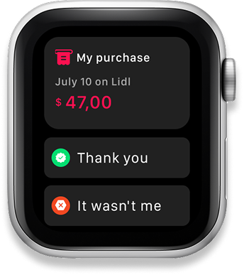
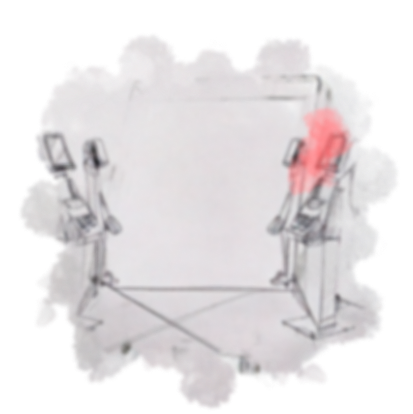

A more human future for everyday payments.
An exploration of payment beyond the familiar card terminal and checkout screen.

What if payment disappeared into the experience?
The project asks how emerging technologies could reduce the friction of everyday transactions without making people feel less in control. Rather than treating a payment as a standalone screen, it considers the moment, environment and confidence around it.
Keep people informed and in control.
The concept explores voice and ambient interfaces for confirming a purchase, while making the amount and the choice visible. A watch, a spoken confirmation and a familiar display each offer a different way to notice, approve or question a transaction.
Payment cues across devices and environments
From wrist to counter, each cue is designed to keep the person informed and in control.

A choice with a reason.
Editorial slot · replace before launchShow the constraint, the choice you made, and what that choice changed in the experience.